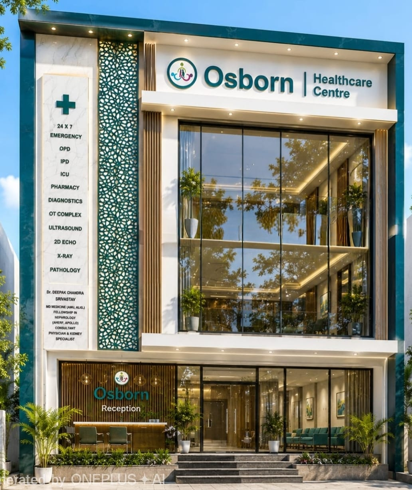

01
Emergency &
critical care
24×7 assessment, stabilisation and critical medical support for serious illness and urgent medical needs.
OSBORN HEALTHCARE CENTRE · GORAKHPUR
Specialist-led kidney, medicine and critical care for local families—supported by 24×7 emergency services, ICU care, diagnostics and pharmacy.

Care when it matters
for your family.
Medical & Kidney Care
ICU & Critical Care
Diagnostics & Pharmacy
Family-focused care
What we care for
From a first consultation to urgent stabilisation and ongoing kidney care, Osborn is designed to make it easier for families to get the support they need.
Talk to our team24×7 assessment, stabilisation and critical medical support for serious illness and urgent medical needs.
Support for kidney disease, CKD screening, dialysis counselling, creatinine evaluation and kidney protection.
Pathology, X-ray, ECG and 2D Echo support timely clinical decisions and appropriate follow-up.
Thoughtful management for diabetes, hypertension, infections, thyroid concerns and preventive health.
WHEN CARE CAN'T WAIT
For acute medical, breathing, blood-pressure, blood-sugar or kidney-related concerns, our emergency and critical-care team is available 24×7.
Call +91 97609 01297Meet your doctor
MD MEDICINE · FELLOWSHIP IN NEPHROLOGY
A physician focused on internal medicine, kidney disease, hypertension, diabetes and preventive healthcare.
JNMCH, Aligarh Muslim University; fellowship training in nephrology at Apollo Hospitals, New Delhi; experience at AIIMS Gorakhpur and Apollo Hospital, New Delhi.
Chronic disease management, early diagnosis, lifestyle counselling and long-term wellness planning.
Experience in renal biopsy, central line insertion, lumbar puncture and bone marrow biopsy. Official profile highlights 100+ successful internal jugular dialysis catheter placements.
Your care, made clearer
Share your concern with the clinic team and get directed to the appropriate care.
Get a clear evaluation, with diagnostics where clinically required.
Receive practical treatment advice and guidance on what happens next.
Stay supported through follow-up, monitoring and long-term disease care.
Visit us
Choose the location that is most convenient for your consultation and follow-up care.
At the centre
Essential services that help make the healthcare journey more convenient for patients and families.
Urgent assessment, stabilisation and ICU support.
Details of bed capacity and visiting guidance are being updated with the clinical team.
Hours: 8:00 AM–8:00 PM.
Pathology, X-ray, ECG and 2D Echo. Test availability and report timings are being updated.
Patient voices
Shared by patients and families on their review experience.
“Dr Deepak ji bahut acche doctor hain. Inhone meri pareshaniyon ko samjha aur ek achha treatment kiya.”
“Dr. Deepak Chandra Srivastava ek bahut hi acche aur humble doctor hain. Meri problems ko dhyan se suna aur clearly samjhaya.”
CLINICAL INSIGHT
Featured journal publication · 2024
Indian Journal of Community Medicine, Volume 49, Issue 1, pages 203–208
Read the publicationREADY WHEN YOU ARE
Call your nearest clinic to arrange a consultation or reach our main centre for urgent care.
Insurance, cashless facilities, detailed pathology menu and additional care-team information are being confirmed and will be added soon.